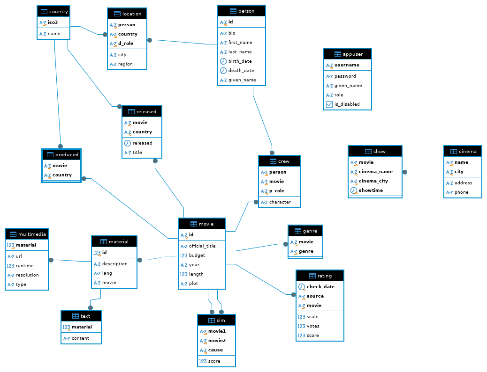

SQL
- Funzioni / operatori / clausole
- Prodotto cartesiano
- Join
- Join esterno (outer join)
- Viste
- Explain
- Query correlata
- Query ricorsive
- Esercizi
Structured Query Language
Linguaggio dichiarativo.
DDL: comandi per creare strutture per l’ossatura della base di dati
(CREATE TABLE, CREATE VIEW, …)
DML: istruzioni (INSERT, DELETE,
UPDATE, …)
DQL: SELECT
DCL: comandi sul controllo
Funzioni / operatori / clausole
lowertrasforma la stringa in lowercaselikeilikeinsensitiveliketrimrimuove gli spazi prima e dopoltrimspazi a sinistrartrimspazi a destrabetweenad esempio... vote BETWEEN 1 and 10;inad esempio... lower(genre) in ('drama', 'thriller', 'crime')distinct- ad esempio
SELECT DISTINCT movie FROM imdb.genre(elimina i duplicati, rendendo il risultato “come fosse in algebra relazionale”) SELECT DISTINCT movie, genre FROM imdb.genreperchéDISTINCTlavora sull’intera clausolaSELECT
- ad esempio
order byordina ciò che restituiamo, e’ l’ultima cosa che viene fatta; si può specificareDESCper più attributi in base alle necessita’ Si può fareORDER BY 2per riferirsi alla colonna2extractpermette di prendere parti di una data come ad esempioWHERE extract(YEAR FROM birth_date) = '1971'ase’ l’equivalente di \(\rho\) nell’algebra relazionale::e’ l’operatore di castSELECT extract(year) from birth_date)::char(4) from imdb.personis nullunico modo per confrontare conNULL
ALLda true solo se il predicato e’ verificato per tutti i valori restituiti dalla sotto query ad esempio nella seguente ammettendo che la sub-query ritornasse più valori, allora un record per poter essere restituito dovrebbe essere maggiore di tutti questi valori
SELECT id, official_title, length
FROM imdb.movie
WHERE length > ALL (
SELECT length
FROM imdb.movie
WHERE official_title = 'Inception'
);ANYda true se il predicato e’ verificato per almeno un valore restituito dalla sotto querymin/max(agg)avg(agg)sum(agg)count(agg) cardinalità di una relazioneCOUNT(*)conta tutte le righeCOUNT(attributo)conta le occorrenze in cui l’attributo non e’NULL, sempre bene contare su chiave esterna per essere sicuro che siaNOT NULL
group by(agg) partizionare i record in base ad un criteriohavingfiltra sul risultato del gruppo, quindi su operatori aggregati o sugli attributi del gruppo; come ottimizzazione e’ meglio usare unaWHEREprima di arrivare allaGROUP BYin modo da raggruppare su meno record, quindi e’ sconsigliato usare laHAVINGal suo posto
(agg) sono operatori di aggregamento, ignorano il NULL;
vengono eseguiti alla fine; posso proiettare solo attributi aggregati o
prodotti da un operatore di aggregamento. Non si possono fare aggregati
di aggregati.
La precedenza degli operatori logici viene valutata da sinistra verso destra, quindi
SELECT *
FROM imdb.movie
WHERE year '2010' OR length >= 60 AND length <= 120;Prima valuta year '2010' OR length >= 60 e poi il
risultato di questa in AND.
% segnaposto per una stringa di qualsiasi lunghezza
_ segnaposto per una stringa di lunghezza 1
Prodotto cartesiano
SELECT *
FROM imdb.movie, imdb.producedCardinalità totale e’ uguale a cardinalità movie (1033) per cardinalità produced (1332).
Join
Sono una selezione sul prodotto cartesiano.
SELECT *
FROM imdb.movie m, imdb.produced p
WHERE m.id = p.moviemovie.id chiave primaria, produced.movie
chiave esterna. Cardinalità e’ uguale a cardinalità di produced.
Sintassi alternativa
SELECT m.id, m.official_title
FROM imdb.movie m
INNER join imdb.produced p ON m.id = p.movie
WHERE country = 'USA'a JOIN b ON c restituisce i record di a e
b nel prodotto cartesiano che soddisfano
c.
Eventuali WHERE vengono applicate dopo la
JOIN!
Join esterno (outer join)
Aggiunge al join eventuali record che non hanno alcuna corrispondenza
nella tabella di destra (nel caso di LEFT JOIN). Prima fa
un INNER JOIN applicando le clausole ON, poi
aggiunge i record spuri (che sono quelli della tabella “dall’altro lato”
per cui non e’ stato trovato un corrispondente).
Ad esempio per la richiesta “selezionare paesi nei quali non sono prodotti film”:
SELECT c.iso3
FROM country c
LEFT JOIN produced p ON c.iso3 = p.country
WHERE p.country IS nullLa cardinalità quindi include anche i record senza corrispondenza.
FULL JOIN combina LEFT e
RIGHT.
Viste
Oggetti derivati formati a partire dai dati nelle tabelle, per offrire delle proiezioni dei dati tipicamente appartenenti a tabelle diverse.
CREATE VIEW movie_person as (
SELECT *
FROM movie
INNER JOIN crew on movie.id crew.movie
INNER JOIN person on person.id = crew.person
)A questo punto trovare le persone di inception diventa quanto segue.
Prima viene eseguita movie_person e poi viene eseguita la
seconda query (nessuna duplicazione dei dati).
SELECT *
FROM movie_person
WHERE official_title ilike 'inception' AND p_role 'actor'Explain
Controllare i costi di una query, mostra l’albero di esecuzione della query. Si parte a leggere dalle foglie.
EXPLAIN ANALYZE ...Query correlata
Molto inefficiente
Query ricorsive
La tabella sim descrive similarità tra pellicole, la
colonna cause spiega il motivo di questa similarità.
- Data una pellicola specifica suggerire le pellicole simili
Sono interessato alla pellicola 0013444, le sono simili
quelle che rispondono a
SELECT movie2 FROM sim WHERE movie1 = '0013444'Ma sono simili a 0013444 anche le pellicole simili a
quelle restituite dalla query precedente, cioè se 0018756
e’ restituito dalla query precedente, anche le query simili a
0018756 sono indirettamente simili a
0013444.
Magari vorrei fermarmi ad una “distanza 3”. Posso interpretare le pellicole come nodi, un arco e’ presente se c’e’ una relazione di somiglianza tra le due pellicole.
Esempio base di query ricorsiva
WITH RECURSIVE t(n) AS (
SELECT 1
UNION all
SELECT n+1 FROM t)
SELECT n FROM tt(n) specifica che n e’ il nome di cosa la
query restituisce. SELECT 1 e’ il passo base,
SELECT n+1 FROM t e’ il passo ricorsivo.
Tutte le query ricorsive quindi seguono questo schema, con la
UNION tra i due passi.
UNION ALL rimuove duplicati, UNION li
tiene.
Il problema di questa query e’ che non si ferma mai, quindi ne
limitiamo l’esecuzione con la WHERE.
WITH RECURSIVE t(n) AS (
SELECT 1
UNION all
SELECT n+1 FROM t WHERE n < 10)
SELECT n FROM tLa differenza tra UNION e UNION ALL e’
nella gestione dei duplicati, la seconda gestisce anche i duplicati.
Altro esempio
Supponiamo di essere interessati ad una organizzazione dei generi che sia gerarchica.
CREATE TABLE genre_taxonomy {
genre_name VARCHAR PRIMARY KEY,
genre_parent VARCHAR
}
ALTER TABLE genre_taxonomy
ADD CONSTRAINT parent_fk FOREIGN KEY (genre_parent)
REFERENCES genre_taxonomy(genre_name)
Serve ALTER TABLE perché e’ un riferimento alla tabella
stessa, quindi va prima creata la tabella, e poi si può introdurre la
foreign key.
Relazione 1 a N:
- 1 perché preso un sotto-genere ha sempre e solo 1 padre
- N perché preso un sopra-genere può avere N figli
- thriller
- noir
- poliziesco
- spionaggio
- cronaca nera
- splatterRestituire i generi di ‘poliziesco’
WITH RECURSIVE search_parent(the_genre, parent_genre) AS (
SELECT genre_name, genre_parent
FROM genre_taxonomy
WHERE genre_name = 'poliziesco'
union
SELECT sp.the_genre, gt.genre_parent -- nota gli stessi nomi dei parametri
FROM search_parent sp
JOIN genre_taxonomy gt ON sp.genre_parent = gt.genre_name
)
SELECT * FROM search_parentSi ferma grazie al JOIN che non produce una riga quando
trova un NULL nella sua condizione di ON.
Restituire i primi due generi di ‘poliziesco’, quindi mi fermo “prima di arrivare in cima”
Aggiungo un parametro distance
WITH RECURSIVE search_parent(the_genre, parent_genre, distance) AS (
SELECT genre_name, genre_parent, 1
FROM genre_taxonomy
WHERE genre_name = 'poliziesco'
union
SELECT sp.the_genre, gt.genre_parent, sp.distance + 1
FROM search_parent sp
JOIN genre_taxonomy gt ON sp.genre_parent = gt.genre_name
WHERE distance < 1
)
SELECT * FROM search_parentRiprendendo sulle pellicole simili
WITH RECURSIVE search_sim(movie, t_movie, distance) AS(
SELECT movie1, movie2, 1
FROM sim
WHERE movie1 = '0013444'
UNION
SELECT ss.movie, si.movie2, distance + 1
FROM search_sim ss
JOIN sim si ON ss.s_movie = si.movie1
WHERE distance < 3
)Esercizi

- Selezionare il titolo delle pellicole del 2010
SELECT official_title
FROM imdb.movie
WHERE year = '2010';- Cercare pellicole che hanno “murder” nel titolo
SELECT *
FROM imdb.movie
WHERE official_title LIKE '%murder%'- Trovare le pellicole prodotte in due paesi diversi
SELECT *
FROM imdb.produced p1, imdg.produced p2
WHERE p1.movie = p2.movie AND p1.country <> p2.countryPero’ in questo caso ottengo duplicati, quindi dovrei rimuoverli,
posso risolvere usando il <
SELECT p1.movie, p1.country as country1, p2.country as country2
FROM imdb.produced p1, imdg.produced p2
WHERE p1.movie = p2.movie AND p1.country < p2.country- Persone decedute in un paese diverso da quello di nascita
SELECT *
FROM location l1, location l2
WHERE l1.person = l2.person AND
l1.d_role <> l2.d_role AND l1.country <> l2.countryMa se la lascio cosi ha duplicati, per rimuoverli uso
SELECT *
FROM location l1, location l2
WHERE l1.person = l2.person AND
l1.d_role = 'B' AND l2.d_role = 'D' AND
l1.country <> l2.country- Trovare le pellicole che non hanno materiali
SELECT movie.id
FROM movie
EXCEPT
SELECT DISTINCT material.movie
FROM material- Trovare le pellicole che sono prodotte in ITA e USA
La seguente e’ sbagliata! Scorre la tabella produced cercando un
record che contemporaneamente abbia country 'ITA' e
'USA'
SELECT *
FROM produced
WHERE country = 'ITA' AND country = 'USA'Viene semplicissimo con l’intersezione occhio a non usare
* perché in un caso filtriamo country con ITA
e nell’altro con USA quindi saranno sempre diversi, quindi
mai intersecabili
SELECT movie FROM produced WHERE country = 'ITA'
INTERSECT
SELECT movie FROM produced WHERE country = 'USA'- Trovare i titoli delle pellicole prodotte in ITA e USA
SELECT id, official_title
FROM produced JOIN movie ON movie = id
WHERE country = 'ITA'
INTERSECT
SELECT id, official_title
FROM produced JOIN movie ON movie = id
WHERE country = 'USA'Metto anche id nella SELECT per avere una
intersezione solo quando anche l’id (che e’ chiave) e’
uguale, altrimenti potrei avere duplicati.
Posso farlo anche con una CTE . Common Table Expressions
WITH mp AS (
SELECT * FROM produced INNER JOIN movie ON movie = id
)
SELECT id, official_title FROM mp WHERE country = 'ITA'
INTERSECT
SELECT id, official_title FROM mp WHERE country = 'USA'Il beneficio e’ creare un oggetto in memoria, temporaneo. Utile quando ho bisogno di diversi componenti.
Oppure ancora
SELECT id, official_title FROM movie WHERE id IN (
SELECT movie FROM produced WHERE country = 'ITA'
INTERSECT
SELECT movie FROM produced WHERE country = 'USA'
)Oppure ancora con self join (che e’ anche un razzo)
SELECT usa.movie
FROM produced usa
JOIN produced ita ON usa.movie = ita.movie
JOIN movie ON usa.movie = id
WHERE usa.country = 'USA' AND ita.country = 'ITA'- Trovare titolo dei film con durata superiore alla durata di inception
La seguente non va bene senza ANY perché potrei avere
più risultati dalla inner query
SELECT id, official_title, length
FROM imdb.movie
WHERE length > ANY (
SELECT LENGTH
FROM imdb.movie
WHERE official_title = 'Inception'
)O anche
SELECT DISTINCT m1.id, m1.official_title
FROM movie m1 JOIN movie m2
ON m1.length > m2.length
WHERE m2.official_title = 'Inception'TODO e’ possibile usare SELF JOIN per emulare il comportamento della ALL?
- Trovare le pellicole prodotte solo in Italia
SELECT p.movie
FROM produced p
WHERE p.country = 'ITA' AND movie NOT IN (
SELECT movie
FROM produced
WHERE country <> 'ITA'
)Oppure con la sottrazione
SELECT movie FROM produced WHERE country = 'ITA'
EXCEPT
SELECT movie FROM produced WHERE country <> 'ITA'Oppure con join esterno
WITH itamovies AS (
SELECT p.movie
FROM produced p
WHERE p.country = 'ITA'
),
nonitamovies AS (
SELECT movie
FROM produced
WHERE country <> 'ITA'
)
SELECT *
FROM itamovies LEFT JOIN nonitamovies ON itamovies.movie = nonitamovies.movie
WHERE nonitamovies.movie IS NULLOppure senza WITH
SELECT DISTINCT itamovies.*
FROM produced itamovies
LEFT JOIN produced nonitamovies ON itamovies.movie = nonitamovies.movie AND nonitamovies.country <> 'ITA'
WHERE itamovies.country = 'ITA' AND nonitamovies.movie IS NULL- Trovare il titolo di tutti i film con relativi generi
La seguente non troverebbe i film che non hanno genere
SELECT id, official_title, genre
FROM movie
JOIN genre ON movie.id = genre.moviequindi
SELECT id, official_title, genre
FROM movie
LEFT JOIN genre ON movie.id = genre.movie- Per ogni persona mostrare il nome e il country dove e’ deceduto, incluse le persone per le quali non abbiamo un country di decesso
SELECT id, given_name, country
FROM person
LEFT JOIN location ON person.id = location.person
WHERE d_role = 'D'La WHERE viene valutata sull’effetto del
JOIN, quindi lo annulla, perché per i record spuri
d_role sarebbe NULL, quindi la query non e’
corretta perché non aggiunge i NULL.
Possibile soluzione in cui filtriamo prima
WITH deaths AS (
SELECT *
FROM location l
WHERE d_role = 'D'
)
SELECT id, given_name, country
FROM person
LEFT JOIN deaths ON person.id = deaths.personOppure imponiamo il filtro nel momento del join
SELECT id, given_name, country
FROM person
LEFT JOIN location ON person.id = location.person AND d_role = 'D'- Trovare coppie di pellicole che non hanno generi in comune
“Da tutte le possibili combinazioni, togliamo le pellicole che hanno un genere in comune”
SELECT DISTINCT g1.movie, g2.movie
FROM genre g1 JOIN genre g2 ON g1.movie > g2.movie
except
SELECT DISTINCT g1.movie, g2.movie
FROM genre g1 JOIN genre g2 ON g1.movie > g2.movie
WHERE g1.genre = g2.genreoppure (notare l’uso di c nella Query correlata)
WITH couples as (
SELECT DISTINCT g1.movie AS movie1, g2.movie AS movie2
FROM genre g1 JOIN genre g2 ON g1.movie > g2.movie
)
SELECT *
FROM couples c
WHERE NOT EXISTS (
SELECT * ;; irrilevante cosa abbiamo qui
FROM genre g1, genre g2
WHERE g1.movie = c.movie1 AND g1.movie = c.movie2 AND g1.genre = g2.genre
)- Trovare i film che non sono stati distribuiti nei paesi nei quali sono stati prodotti
Tabelle interessate: produced e released
Un movie m viene inserito nel risultato se non esiste un
record della tabella produced p per il quale esiste un
record di release relativo allo stesso movie e paese di
p
SELECT id, official_title
FROM movie m
WHERE NOT EXISTS (
SELECT *
FROM produced p
WHERE p.movie = m.id AND EXISTS (
SELECT *
FROM released r
WHERE r.movie = m.id AND p.country = r.country
)
)Utile quando devo contemporaneamente far valere più vincoli. Con gli operatori insiemistici non me la cavo perché devo controllare le condizioni su ogni singolo record. TODO ESPANDERE Con esempio e spiegazione
Oppure
SELECT id, official_title
FROM movie m
WHERE NOT EXISTS (
SELECT *
FROM produced p JOIN released r ON p.movie = r.movie AND
p.country = r.country
WHERE p.movie = m.id
)- Trovare il film di durata maggiore
SELECT max(length)
FROM movie- Trovare il film di durata maggiore e restituire il titolo
La seguente va in errore perché nell’aggregare perdono il riferimento alla tupla che contiene quel valore, inoltre potrei avere più di un record con quel valore, quindi devo aggregare tutto ciò che voglio selezionare
SELECT id, official_title, max(length) FROM movieUn modo per farlo e’
SELECT * FROM movie WHERE length = (
SELECT MAX(length) as durata_massima FROM movie
)Oppure anche
WITH mmax AS (
SELECT MAX(length) as durata_massima FROM movie
)
SELECT m.*
FROM movie JOIN mmax ON m.length = mmax.durata_massima- Trovare il numero di pellicole per le quali e’ noto l’anno di produzione
Non serve specificare WHERE year IS NOT NULL (vedi
descrizione COUNT)
SELECT count(year) FROM movieInvece cosi serve
SELECT COUNT(*) FROM MOVIE WHERE year IS NOT NULL- Trovare il numero di titoli diversi delle pellicole
SELECT COUNT(DISTINCT official_title) FROM movie- Trovare la durata media dei film del 2010
SELECT sum(length) / count(length)
FROM movie
WHERE year = '2010'- Trovare il numero di pellicole per ogni anno disponibile
Conteggia in base ad ogni gruppo trovato dalla
GROUP BY
SELECT year, COUNT(*)
FROM movie
GROUP BY year- Trovare per ciascun film il numero di persone coinvolte per ciascun ruolo
SELECT COUNT(*)
FROM crew
GROUP BY movie, c.p_role- Trovare il numero di valutazioni per ogni film
La seguente pero’ non tiene conto delle pellicole senza valutazioni,
perché dentro rating ho solo pellicole già valutate
SELECT movie, COUNT(*)
FROM rating
GROUP BY movieLa seguente produce il risultato atteso ma e’ convoluta
SELECT movie, COUNT(*)
FROM ratingGROUP BY movie
UNION
(
SELECT id, 0
FROM movie
EXCEPT
SELECT movie, 0
FROM rating
)Nella seguente occhio a non usare COUNT(*) perché
altrimenti conterebbe le righe, invece usando
COUNT(r.movie) conteggio quando la riga non e’ spuria.
SELECT movie, COUNT(r.movie)
FROM movie m LEFT JOIN rating r ON m.id = r.movie
GROUP BY id- Trovare il miglior rating di ciascun film
SELECT movie, MAX(score / scale)
FROM movie m LEFT JOIN rating r on movie.id = rating.movie
GROUP BY id
ORDER BY 2 DESC- Trovare l’attore che ha recitato nel maggior numero di film
MAX(COUNT(*)) non si può fare.
La seguente e’ sbagliata, perché potrebbero esserci più record con il
valore massimo. DISTINCT MOVIE per rimuovere attori con più
di un ruolo nello stesso film.
SELECT person, COUNT(DISTINCT movie)
FROM crew
WHERE p_role = 'actor'
GROUP BY person
ORDER BY 2 DESC
LIMIT 1Soluzione
WITH recitazioni AS (
SELECT person, COUNT(DISTINCT movie) AS n_partecipazioni
FROM crew
WHERE p_role = 'actor'
GROUP BY person
)
SELECT id, given_name, n_partecipazioni
FROM person p JOIN recitazioni r ON p.id = r.person
WHERE n_partecipazioni = (
SELECT MAX(n_partecipazioni) AS max_partecipazioni
FROM recitazioni)Soluzione alternativa
SELECT person, COUNT(DISTINCT movie) AS n_partecipazioni
FROM crew
WHERE p_role = 'actor'
GROUP BY person
HAVING COUNT(DISTINCT movie) >= ALL (
SELECT COUNT(DISTINCT movie)
FROM crew
WHERE p_role = 'actor'
GROUP BY person
)- Trovare i film con cast più numeroso della media dei film del medesimo genere
WITH movie_cast AS (
SELECT movie, COUNT(DISTINCT person) AS n_person
FROM crew
WHERE p_role in ('actor', 'director')
GROUP BY movie
),
avg_genre AS (
SELECT genre, AVG(n_person) as avg_cast
FROM movie m LEFT
LEFT JOIN genre g ON m.id = g.movie
LEFT JOIN movie_cast mc ON m.id = mc.movie
GROUP BY genre
)
SELECT m.id, official_title, g.genre, n_person
FROM movie m
LEFT JOIN genre g ON m.id = g.movie
LEFT JOIN movie_cast mc ON m.id = mc.movie
WHERE mc.n_person > (
SELECT avg_cast
FROM avg_genre
WHERE g.genre = avg_genre.genre
)- Trovare le persone che hanno recitato in tutti i film di genere crime (divisione)
Tabelle utili \[ \begin{align} &\ crew(person,\ movie) \newline &\ genre(movie,\ genre) \newline \end{align} \]
In algebra e’ \[ \begin{align} &\ A = \pi_{(person,movie)} crew \newline &\ B = \pi_{movie}(\sigma_{genre='Crime}) \newline &\ A / B \newline \end{align} \]
SELECT id, given_name
FROM person p
WHERE NOT EXISTS (
SELECT *
FROM genre g
WHERE g.genre = 'Crime' AND NOT EXISTS (
SELECT *
FROM crew c
WHERE p_role = 'actor' AND p.id = c.person AND g.movie = crew.movie
)
)- Restituire le persone che hanno svolto più di un ruolo all’interno dello stesso team
Questa prima query e’ in grado di dire quali ruoli e la persona ha svolto e in che film…
SELECT DISTINCT c1.person, c1.p_role, c2.p_role, c1.movie
FROM crew c1
JOIN crew c2 ON c1.person = c2.person
WHERE c1.p_role <> c2.p_role AND c1.movie = c2.movie
ORDER BY c1.person…mentre questa query e’ in grado di dire che la data
person ha svolto più ruoli all’interno del film, ma non sa
dire quali per via dell’aggregazione che fa perdere informazione; per
contro questa query e’ più performante della precedente
SELECT person, movie
FROM crew
GROUP BY movie, person
HAVING COUNT(DISTINCT p_role) > 1;- Trovare i film che hanno un cast più numeroso della media
ANY e’ opzionale nel caso di un solo record
ritornato
WITH cast_crew_num AS (
SELECT movie, COUNT(*)
FROM crew
GROUP BY movie
),
mean AS (
SELECT AVG(count) AS m
FROM cast_crew_num
)
SELECT *, (SELECT m FROM mean)
FROM cast_crew_num
WHERE count > (SELECT m FROM mean)TODO aggiungere publications.publication e le altre tabelle